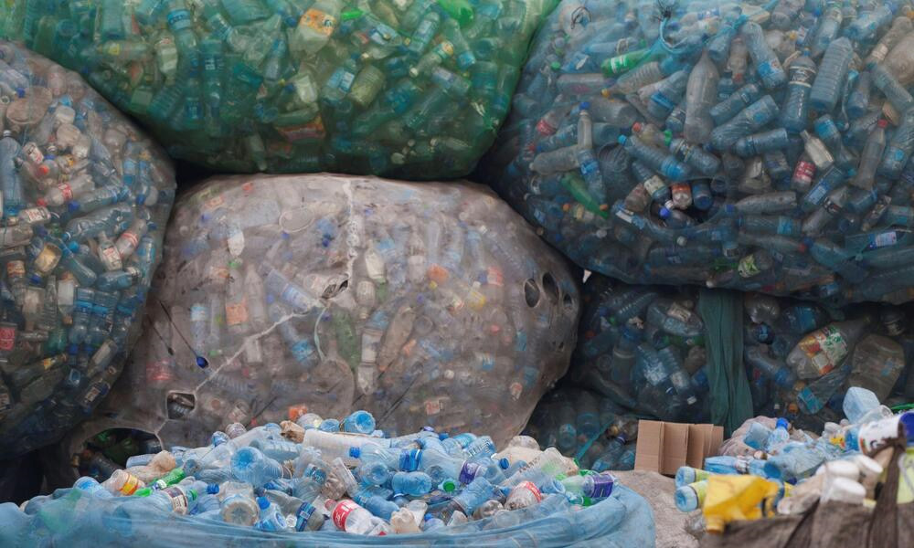

Kielelezo namba 1: Taka za plastiki zilizohifadhiwa kwa ajili ya kurejelezwa
Juni Mosi mwaka 2019, Serikali ilichukua hatua ya kudhibiti taka za plastiki kwa kuweka zuio la matumizi ya mifuko ya plastiki ya kubebea vitu mbalimbali maarufu kama Rambo. Lengo ni kupunguza athari za taka za plastiki katika mazingira.
Vilevile, taka za vimiminika zinatakiwa kudhibitiwa kwa sababu zikitupwa kwenye mazingira zinaleta madhara kwa binadamu na viumbe wengine. Mfano wa taka za kimiminika ni majitaka kutoka kwenye makazi ya watu, viwandani na migodini.
Taka ngumu na taka za vimiminika zikiingia katika vyanzo vya maji huchafua maji na kuathiri watumiaji wa maji hayo. Vilevile, huathiri viumbehai wanaoishi majini kama vile samaki, vyura, mamba, na viboko.